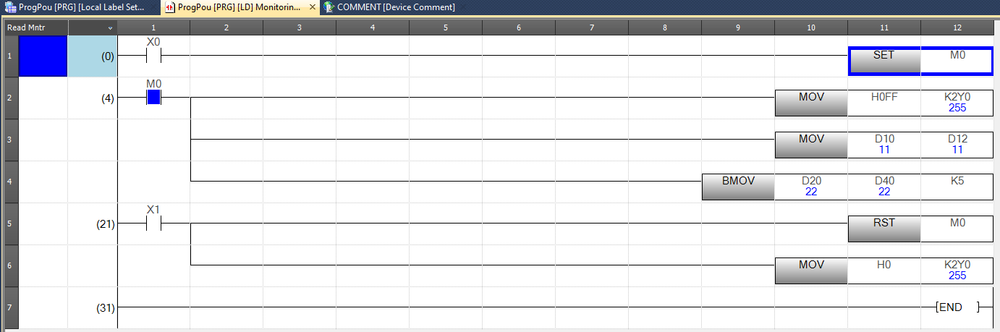
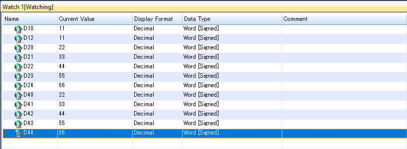
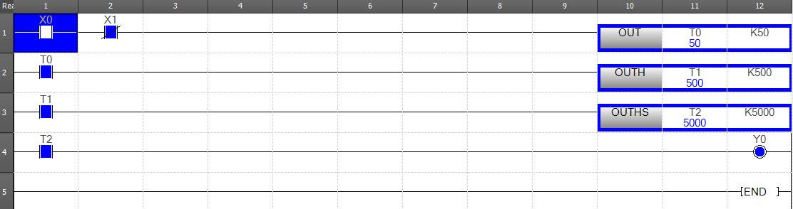
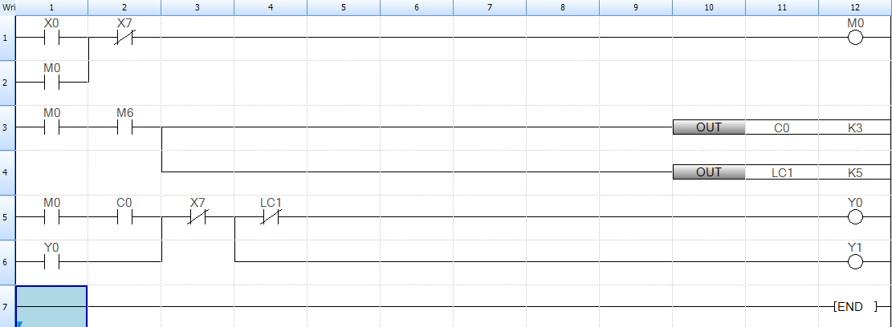
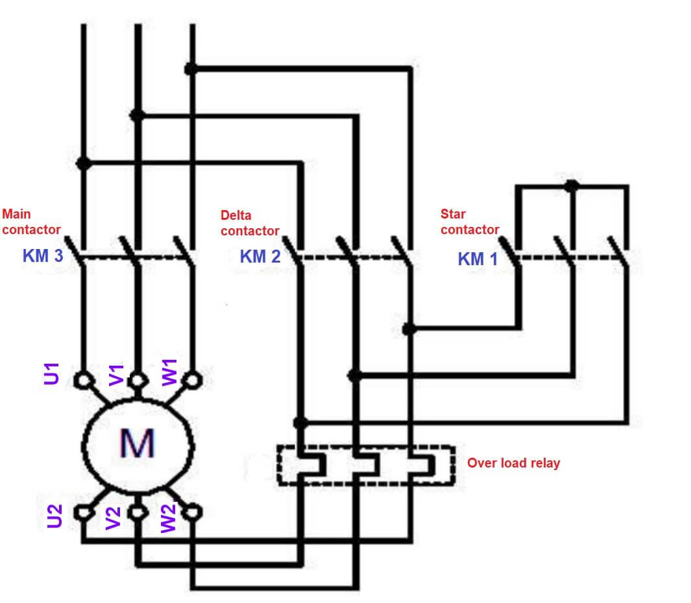
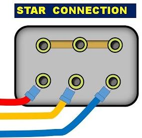
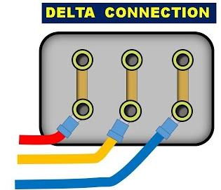
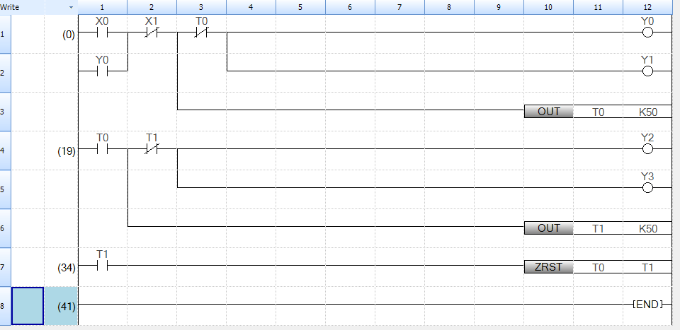
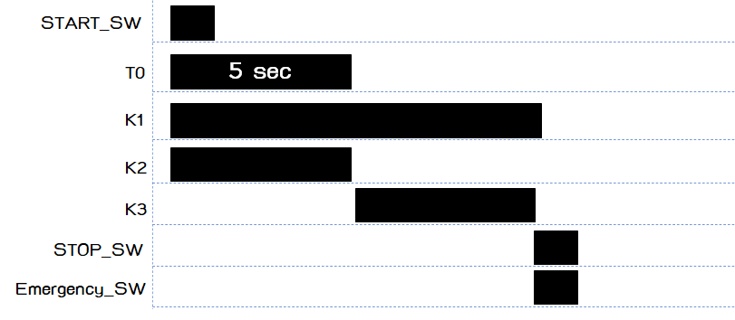

Ladder Logic & คำสั่งพื้นฐาน
Ladder Diagram (LD) คือภาษาที่นิยมที่สุดในการเขียน PLC — เพราะหน้าตาเหมือนวงจรรีเลย์ที่วิศวกรไฟฟ้าคุ้นเคยอยู่แล้ว
บทนี้จะสอนตั้งแต่ Contact + Coil จนถึงคำสั่งสำคัญอย่าง MOV, TIMER, COUNTER, ZRST
หน้าตา Ladder Diagram
Ladder อ่านจาก ซ้ายไปขวา · บนลงล่าง — เปรียบเสมือนสายไฟที่จ่ายกระแสจาก Power Rail ฝั่งซ้าย ผ่าน Contact ต่าง ๆ ไปยัง Coil ทางขวา
กฎพื้นฐานมีแค่ไม่กี่ข้อ:
⚙️ PLC ทำงานยังไง — Scan Cycle
ก่อนจะเขียน Ladder ต้องเข้าใจก่อนว่า PLC ไม่ได้ ทำงานแบบ Event-driven เหมือนภาษาคอมทั่วไป —
มันวนซ้ำ Scan Cycle ทีละเฟส ตามนี้ตลอด · ลองดูแอนิเมชันด้านล่าง แล้วลองกดสวิตช์ X0
ในจังหวะต่าง ๆ ดูว่าทำไม Output ถึงไม่เปลี่ยนทันที
🧩 ลองสร้าง Rung — Self-Hold (Drag & Drop)
ก่อนจะดู Simulator ทำงาน — ลองประกอบ Rung ของตัวเองดู ลากบล็อกจากด้านล่างใส่ในช่องว่าง:
🎮 ลองเล่นเลย — Self-Hold Simulator
กดปุ่ม X0 (Start) ดูว่า Y0 ติดค้าง แม้ปล่อยปุ่มแล้วก็ยังติด — แล้วกด X1 (Stop) เพื่อตัด:
Device Memory — สัญลักษณ์ที่ต้องรู้
| สัญลักษณ์ | ชื่อ | ใช้ทำอะไร | เลข Bit/Word |
|---|---|---|---|
X | Input | อ่านสถานะจากขั้ว Input | Bit (Octal: X0–X17) |
Y | Output | สั่งงานออกขั้ว Output | Bit (Octal: Y0–Y17) |
M | Internal Relay | "Bit ภายใน" ใช้เป็น flag ระหว่างขั้น | Bit (M0–M7679) |
D | Data Register | เก็บค่าตัวเลข 16-bit | Word (D0–D7999) |
T | Timer | นับเวลา | Bit + Word (T0–T511) |
C | Counter | นับจำนวน | Bit + Word (C0–C255) |
K / H | Constant | K = Decimal, H = Hex | เช่น K10, H1F |
คำสั่งกลุ่มที่ 1 — Logic พื้นฐาน
LD, OUT, AND, OR
LD X0 ; โหลด Contact NO ของ X0
AND X1 ; AND กับ X1
OUT Y0 ; ถ้าทั้งคู่ ON → Y0 ONSET / RST — Latch / Unlatch
ใช้แทน Self-hold ได้เมื่อโปรแกรมซับซ้อน — SET สั่งให้ Bit ค้าง ON, RST ทำให้ OFF
LD X0 ; ปุ่ม Start
SET Y0 ; Y0 = ON และค้าง
LD X1 ; ปุ่ม Stop
RST Y0 ; Y0 = OFFคำสั่งกลุ่มที่ 2 — Data Move (MOV)
คำสั่ง MOV ใช้ "ก็อปปี้" ค่าจากที่หนึ่งไปอีกที่หนึ่ง — เป็นพื้นฐานของงานคำนวณทุกอย่าง
| คำสั่ง | Syntax | ทำอะไร |
|---|---|---|
MOV |
MOV S D |
ก็อป S → D (ทำงานตราบเท่าที่ Input ON) |
MOVP |
MOVP S D |
ก็อป S → D แค่ ครั้งเดียว ตอน Input เปลี่ยน OFF → ON (Pulse) |
BMOV |
BMOV S D N |
ก็อป N ค่า จาก S → D (Block Move) |
; ก็อปค่า 100 เข้า D10
LD M0
MOV K100 D10
; ก็อป D10..D12 (3 ค่า) ไปที่ D100..D102
LD M1
BMOV D10 D100 K3

คำสั่งกลุ่มที่ 3 — Timer
Timer ใน FX5U มี 3 ความละเอียด:
| คำสั่ง | หน่วย | ใช้ตอน |
|---|---|---|
OUT T0 K20 | 0.1 วินาที × 20 = 2 s | งานทั่วไป |
OUTH T0 K20 | 0.01 วินาที × 20 = 0.2 s | ต้องการความละเอียดระดับ ms |
OUTHS T0 K20 | 0.001 วินาที × 20 = 20 ms | งานความเร็วสูง |
; รอ 2 วินาทีหลังกดปุ่ม X0 แล้วเปิด Y1
LD X0
OUT T0 K20 ; T0 หน่วงเวลา 20 × 0.1s = 2.0s
LD T0 ; Contact ของ T0 จะ ON เมื่อนับครบ
OUT Y1
OUT T0 K50 = 5 s, OUTH T1 K500 = 5 s (0.01s × 500), OUTHS T2 K5000 = 5 s (0.001s × 5000)🧩 Build the Rungs — Timer ON-Delay
ก่อนเล่น Sim ลองประกอบเองดู — Timer ใช้ 2 Rung แยกกัน — ลากบล็อกใส่ในช่อง:
🎮 ลองเล่น — Timer ON-Delay
กดปุ่ม X0 ค้างไว้ → ดู T0 นับขึ้นเรื่อย ๆ จนครบ 3.0 วินาที → Y0 ติด:
คำสั่งกลุ่มที่ 4 — Counter
; นับ pulse ที่ X0 ทุกครั้งที่เปลี่ยน OFF→ON
; ครบ 10 ครั้ง → C0 ON → เปิด Y2
LD X0
OUT C0 K10
LD C0
OUT Y2
; reset counter ด้วย X1
LD X1
RST C0
OUT C0 K3 นับด้วย M0 + M6 ครบ 3 ครั้ง → C0 ON, ส่วน OUT LC1 K5 = Long Counter (32-bit สำหรับนับเกิน 32,767)🧩 Build the Rungs — Counter
ลองประกอบ 2 Rung สำหรับ Counter — Rung 1 ป้อน pulse · Rung 2 ใช้ Counter bit ขับ Coil:
🎮 ลองเล่น — Counter (นับ 5 ครั้ง)
กดปุ่ม X0 5 ครั้ง (รีลีสปุ่มทุกครั้ง — Counter นับ rising edge) → C0 → Y0 ติด · กด X1 = Reset
คำสั่งกลุ่มที่ 5 — ZRST (Zone Reset)
ZRST ใช้ เคลียร์หลาย Bit หรือหลาย Word พร้อมกัน — ประหยัด Rung มาก
เวลา reset state ของระบบทั้งหมด
; เคลียร์ Y0..Y7 พร้อมกัน
LD X10
ZRST Y0 Y7
; เคลียร์ D0..D99 พร้อมกัน
LD X11
ZRST D0 D99ตัวอย่างใช้งานจริง — Star–Delta Motor Starter
ตัวอย่างคลาสสิกที่ต้องใช้ ทุก คำสั่งที่เพิ่งเรียน — สตาร์ทมอเตอร์แบบ Star เป็นเวลา 5 วินาที แล้วสลับเป็น Delta อัตโนมัติ



-
กำหนด I/O Mapping
X0= ปุ่ม Start ·X1= ปุ่ม Stop ·X2= Overload Relay (NC)Y0= K1 (Main Contactor) ·Y1= K2 (Star) ·Y2= K3 (Delta)
-
Rung 1 — Start/Stop Latch ของ Main
LD X0 ; Start OR Y0 ; Self-hold ANI X1 ; Stop (NC) AND X2 ; Overload OK (NC) OUT Y0 ; Main Contactor -
Rung 2 — Star ON เป็นเวลา 5 วินาที
LD Y0 ; Main ON? ANI T0 ; ยังไม่ครบ 5 วินาที OUT Y1 ; Star Contactor LD Y0 OUT T0 K50 ; 50 × 0.1s = 5.0s -
Rung 3 — Delta ON หลัง T0 ครบ + Interlock กับ Y1
LD T0 ; ครบเวลาแล้ว ANI Y1 ; กัน Star/Delta ซ้อนกัน (Interlock) AND Y0 OUT Y2 ; Delta Contactor - ทดลองใน Simulator ก่อนต่อ Hardware จริง ลองรันใน GX Simulator ดู Sequence ว่าถูกต้อง — Star ติด 5 วิ → Star ดับ → Delta ติด

ZRST T0 T1 เคลียร์ Timer ทั้งคู่ตอนหยุด
🧩 The Big One — Build the Star–Delta Rungs
โจทย์ใหญ่ที่สุดของบทนี้ — ประกอบ 4 Rung ของ Star–Delta ทั้งหมด ด้วย 13 บล็อก. เลื่อนข้อความโจทย์ขึ้นไปดูข้อกำหนดแต่ละ Rung:
🎮 ลองเล่น — Star–Delta แบบเต็มระบบ
กด X0 (Start) — สังเกตว่า Y0 (Main) + Y1 (Star) ติดพร้อมกัน → T0 นับขึ้น 5 วินาที → Y1 OFF + Y2 (Delta) ติด · ลอง force X2 (OL) ให้ OFF ระหว่างทาง = จำลอง overload trip:
สรุปสำหรับบทนี้
- Ladder อ่านซ้ายไปขวา · เริ่มจาก Contact (Input ของ Rung) จบที่ Coil (Output ของ Rung)
- จำสัญลักษณ์ Device ให้ได้:
X= Input ·Y= Output ·M= Internal ·D= Data ·T= Timer ·C= Counter - X/Y เป็น Octal — ไม่มี X8/X9
MOV= ก็อปครั้งเดียว ·MOVP= pulse ·BMOV= block- Timer ใช้
OUT T# K#— K คือ "จำนวนหน่วยเวลา" ไม่ใช่หน่วยมิลลิวินาทีตรง ๆ - เสมอเขียน Interlock เมื่อต้องสลับ Contactor